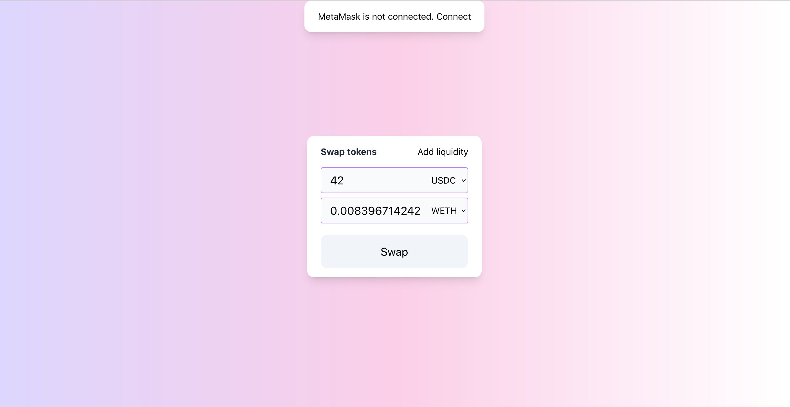
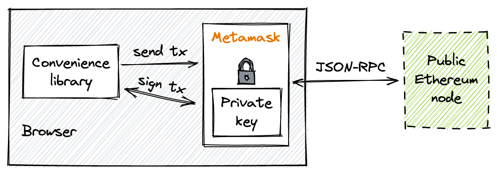

用户界面
最后,我们终于到达了这个里程碑的最后一站——构建用户界面！

由于构建前端应用不是本书的主要目标，我不会展示如何从头开始构建这样一个应用。相反，我将展示如何使用MetaMask与智能合约进行交互。
如果你想尝试这个应用并在本地运行它，你可以在代码仓库的ui文件夹中找到它。这是一个简单的React应用，要在本地运行它，请在
App.js中设置合约地址，然后运行yarn start。
工具概述
什么是MetaMask？
MetaMask是一个以浏览器扩展形式实现的以太坊钱包。它创建并存储私钥，显示代币余额，允许连接到不同的网络，以及发送和接收以太币和代币——一个钱包应该做的所有事情。
除此之外，MetaMask还充当签名者和提供者的角色。作为提供者，它连接到以太坊节点并提供使用其JSON-RPC API的接口。作为签名者，它提供了一个安全交易签名的接口，因此可以用于使用钱包中的私钥签署任何交易。

便利性库
然而，MetaMask本身并不提供太多功能：它只能管理账户和发送原始交易。我们需要另一个库来使合约交互变得容易。我们还希望有一套实用工具，在处理EVM特定数据（ABI编码/解码、大数处理等）时能让我们的生活更轻松。
有多个这样的库。其中两个最流行的是：web3.js和ethers.js。选择其中之一是个人偏好的问题。对我来说，Ethers.js似乎有更清晰的合约交互接口，所以我会选择它。
工作流程
现在让我们看看如何使用MetaMask + Ethers.js实现交互场景。
连接到本地节点
为了发送交易和获取区块链数据，MetaMask需要连接到一个以太坊节点。要与我们的合约交互，我们需要连接到本地Anvil节点。要做到这一点，打开MetaMask，点击网络列表，点击"添加网络"，然后添加一个RPC URL为http://localhost:8545的网络。它会自动检测链ID（在Anvil的情况下是31337）。
连接到本地节点后，我们需要导入我们的私钥。在MetaMask中，点击地址列表，点击"导入账户"，然后粘贴你在部署合约前选择的地址的私钥。之后，转到资产列表并导入两个代币的地址。现在你应该能在MetaMask中看到这些代币的余额了。
MetaMask仍然有一些bug。我遇到的一个问题是，当连接到
localhost时，它会缓存区块链状态。因此，当重启节点时，你可能会看到旧的代币余额和状态。要解决这个问题，请进入高级设置并点击"重置账户"。每次重启节点后，你都需要这样做。
连接到MetaMask
并非每个网站都被允许访问你在MetaMask中的地址。网站首先需要连接到MetaMask。当一个新网站连接到MetaMask时，你会看到一个请求权限的窗口。
以下是如何从前端应用连接到MetaMask：
const connect = () => {
if (typeof (window.ethereum) === 'undefined') {
return setStatus('not_installed');
}
Promise.all([
window.ethereum.request({ method: 'eth_requestAccounts' }),
window.ethereum.request({ method: 'eth_chainId' }),
]).then(function ([accounts, chainId]) {
setAccount(accounts[0]);
setChain(chainId);
setStatus('connected');
})
.catch(function (error) {
console.error(error)
});
}
window.ethereum是由MetaMask提供的对象，它是与MetaMask通信的接口。如果它是undefined，则表示MetaMask未安装。如果它已定义，我们可以向MetaMask发送两个请求：eth_requestAccounts和eth_chainId。实际上，eth_requestAccounts将网站连接到MetaMask。它从MetaMask查询地址，而MetaMask会向用户请求权限。用户将能够选择允许访问哪些地址。
eth_chainId将询问MetaMask连接的节点的链ID。获取地址和链ID后，最好在界面中显示它们：
提供流动性 要向池中提供流动性，我们需要构建一个表单，让用户输入他们想要存入的金额。点击"提交"后，应用将构建一个调用管理合约中mint函数的交易，并提供用户选择的金额。让我们看看如何做到这一点。
Ether.js提供了Contract接口来与合约交互。它使我们的生活变得更加轻松，因为它承担了编码函数参数、创建有效交易并将其交给MetaMask的工作。对我们来说，调用合约看起来就像在JS对象上调用异步方法。
让我们看看如何创建Contracts的实例：
token0 = new ethers.Contract(
props.config.token0Address,
props.config.ABIs.ERC20,
new ethers.providers.Web3Provider(window.ethereum).getSigner()
);
Contract实例是部署在此地址的合约的地址和ABI。需要ABI来与合约交互。第三个参数是MetaMask提供的签名者接口——JS合约实例使用它通过MetaMask签署交易。
现在，让我们添加一个向池中添加流动性的函数：
const addLiquidity = (account, { token0, token1, manager }, { managerAddress, poolAddress }) => {
const amount0 = ethers.utils.parseEther("0.998976618347425280");
const amount1 = ethers.utils.parseEther("5000"); // 5000 USDC
const lowerTick = 84222;
const upperTick = 86129;
const liquidity = ethers.BigNumber.from("1517882343751509868544");
const extra = ethers.utils.defaultAbiCoder.encode(
["address", "address", "address"],
[token0.address, token1.address, account]
);
...
首先要做的是准备参数。我们使用之前计算的相同值。
接下来，我们允许管理合约使用我们的代币。首先，我们检查当前的授权额度：
Promise.all(
[
token0.allowance(account, managerAddress),
token1.allowance(account, managerAddress)
]
)
然后，我们检查它们是否足够转移相应数量的代币。如果不够，我们发送一个approve交易，要求用户批准向管理合约支付特定数量。确保用户已批准全额后，我们调用manager.mint来添加流动性：
.then(([allowance0, allowance1]) => {
return Promise.resolve()
.then(() => {
if (allowance0.lt(amount0)) {
return token0.approve(managerAddress, amount0).then(tx => tx.wait())
}
})
.then(() => {
if (allowance1.lt(amount1)) {
return token1.approve(managerAddress, amount1).then(tx => tx.wait())
}
})
.then(() => {
return manager.mint(poolAddress, lowerTick, upperTick, liquidity, extra)
.then(tx => tx.wait())
})
.then(() => {
alert('流动性已添加！');
});
})
lt是BigNumber的一个方法。Ethers.js使用BigNumber来表示uint256类型，因为JavaScript没有足够的精度来处理这种类型。这是我们需要一个便利库的原因之一。
这与测试合约非常相似，除了授权部分。
上述代码中的token0、token1和manager是Contract的实例。approve和mint是合约函数，它们是在我们实例化合约时从我们提供的ABI动态生成的。当调用这些方法时，Ethers.js会：
- 编码函数参数；
- 构建一个交易；
- 将交易传递给MetaMask并要求签名；用户会看到一个MetaMask窗口并按下"确认"；
- 将交易发送到MetaMask连接的节点；
- 返回一个包含已发送交易完整信息的交易对象。
交易对象还包含wait函数，我们调用它来等待交易被挖掘——这允许我们在发送另一个交易之前等待一个交易成功执行。
以太坊要求严格的交易顺序。还记得nonce吗？它是这个账户发送的交易的账户范围内的索引。每个新交易都会增加这个索引，以太坊不会挖掘一个交易，直到前一个交易（具有较小nonce的交易）被挖掘。
交换代币
要交换代币，我们使用相同的模式：从用户那里获取参数，检查授权，然后在管理器上调用swap。
const swap = (amountIn, account, { tokenIn, manager, token0, token1 }, { managerAddress, poolAddress }) => {
const amountInWei = ethers.utils.parseEther(amountIn);
const extra = ethers.utils.defaultAbiCoder.encode(
["address", "address", "address"],
[token0.address, token1.address, account]
);
tokenIn.allowance(account, managerAddress)
.then((allowance) => {
if (allowance.lt(amountInWei)) {
return tokenIn.approve(managerAddress, amountInWei).then(tx => tx.wait())
}
})
.then(() => {
return manager.swap(poolAddress, extra).then(tx => tx.wait())
})
.then(() => {
alert('交换成功！');
}).catch((err) => {
console.error(err);
alert('失败！');
});
}
这里唯一的新东西是ethers.utils.parseEther()函数，我们用它来将数字转换为wei，以太坊中的最小单位。
订阅变更
订阅变更
对于去中心化应用来说，反映当前区块链状态是很重要的。例如，在去中心化交易所的情况下，根据当前池储备正确计算交换价格至关重要；过时的数据可能导致滑点并使交换交易失败。
在开发池合约时，我们了解了事件，它们充当区块链数据索引：每当智能合约状态被修改时，最好发出一个事件，因为事件被索引以便快速搜索。现在我们要做的是订阅合约事件以保持我们的前端应用更新。让我们构建一个事件源！
要订阅事件，我们将使用on(EVENT_NAME, handler)函数。回调函数接收事件的所有字段和事件本身作为参数：
const subscribeToEvents = (pool, callback) => {
pool.on("Mint", (sender, owner, tickLower, tickUpper, amount, amount0, amount1, event) => callback(event));
pool.on("Swap", (sender, recipient, amount0, amount1, sqrtPriceX96, liquidity, tick, event) => callback(event));
}
要过滤和获取以前的事件，我们可以使用：queryFilter:
Promise.all([
pool.queryFilter("Mint", "earliest", "latest"),
pool.queryFilter("Swap", "earliest", "latest"),
]).then(([mints, swaps]) => {
...
});
你可能注意到一些事件字段被标记为indexed——这些字段由以太坊节点索引，这允许通过这些字段中的特定值搜索事件。例如，Swap事件有sender和recipient字段被索引，所以我们可以通过交换发送者和接收者进行搜索。同样，Ethers.js使这变得更容易：
const swapFilter = pool.filters.Swap(sender, recipient);
const swaps = await pool.queryFilter(swapFilter, fromBlock, toBlock);
就是这样！我们完成了里程碑1！
🎉🍾🍾🍾🎉